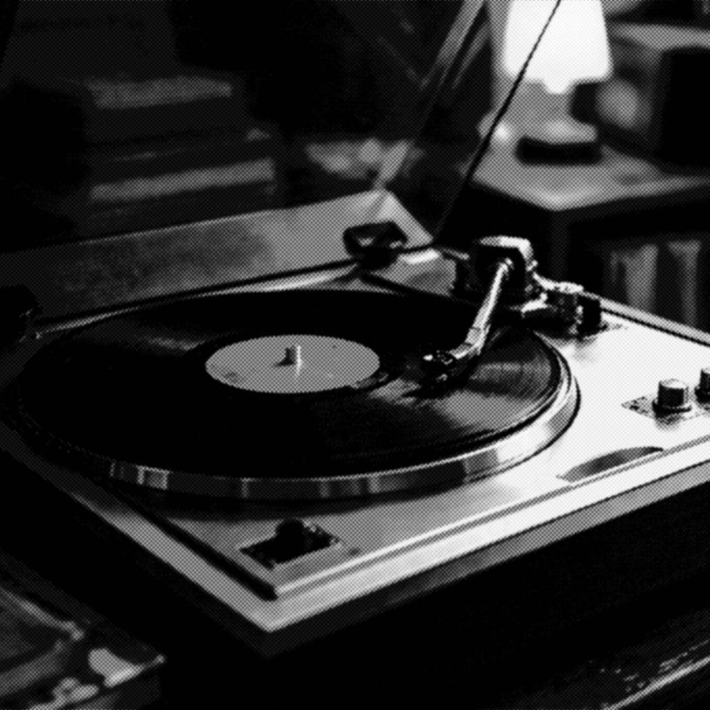

Домашние технологии
Виниловый проигрыватель
Виниловые проигрыватели использовались для прослушивания грампластинок с 1980-х годов.
Год: 1980-1990-ые
Устройство: Виниловый проигрыватель
Тип: Музыка и шум проигрывателя
Длительность: Непрерывный
Категория: Домашние технологии
